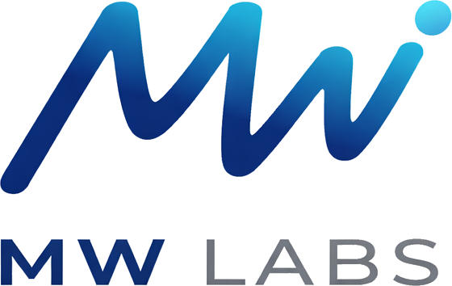

valladolid · datos · ia · cosas pequeñas
Soy Jorge Melgosa de la Fuente (Mel), de Valladolid. Llevo más de veinte años en software y hace unos años encontré lo que de verdad me engancha: los datos, el BI y la IA. Me apasiona ver cómo la información y la inteligencia artificial pueden cambiar cómo trabajamos. No es moda — es lo que más ganas tengo de aprender cada día.
MW LABS es mi rincón. Antes se llamaba WorkingMedia. Resuelvo cosas pequeñas y muy de aquí — un torneo, una liga, un problema de mañana — porque lo local no es menos que lo global; a veces es donde mejor se aprende.
Trabajo en anfix, desde 2014, un programa de facturación y contabilidad online para autónomos, empresas y asesorías — facturas, bancos, impuestos y todo el ciclo contable, con IA y preparado para VeriFactu.
Mi parte: los datos de la compañía — gobernanza, BI e IA — y cómo convertir la información en algo que de verdad ayude a decidir y a construir producto.
También estoy en desarrollos donde la tecnología intenta entender qué necesita la gente y responderle; cosas que aún están cociéndose.
Voy publicando apps para problemas locales y pruebas de concepto. Unas se quedan en eso; otras apuntan a algo más grande.
La familia, el pádel y el fútbol — el peque es portero, así que tampoco me lo puedo quitar de la cabeza. Y la Semana Santa de Valladolid: una pasión de las grandes. Quién sabe si algún día retomo algo con ello.
Si tú no trabajas por tus sueños, alguien te contratará para que trabajes por los suyos.